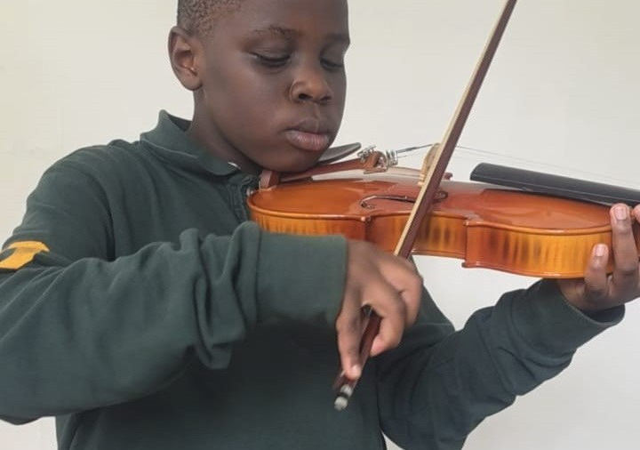

Creative Arts
Music, visual arts, crafts, and creative expression development.
Music / Instruments
Students learn rhythm, vocals, and instrument mastery.


Painting
Colour theory and artistic expression skills.


Pottery
Clay shaping and creative craftsmanship.


Beading
Jewellery design and pattern creativity.


Crocheting
Handcraft skills and patience development.


Photography & Videography
Visual storytelling and media production.